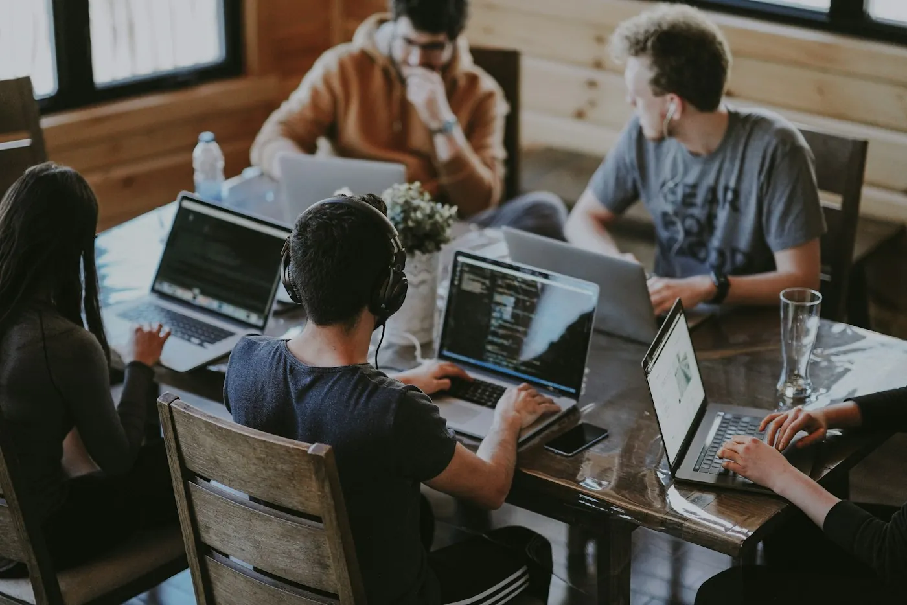

De handen uit de mouwen.
Tijdens twee kerstvakanties werkte ik telkens drie weken bij Carrefour in Lier. Ook in augustus deed ik er een maand vakantiewerk, verspreid over verschillende afdelingen.
Nieuwe taken oppakken en samenwerken met collega’s horen daarbij. Ik leerde om flexibel te zijn en verantwoordelijkheid te nemen voor het werk dat voor me ligt.